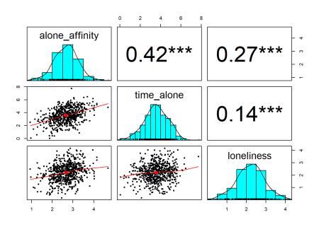
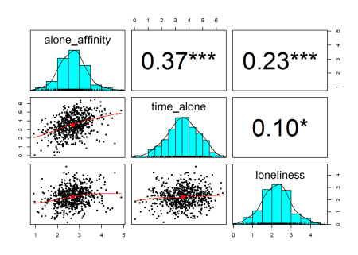
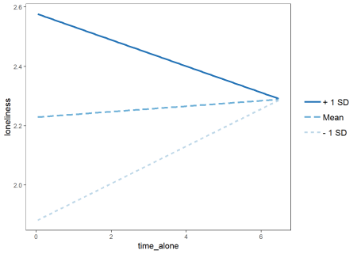
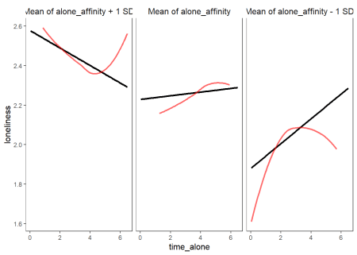
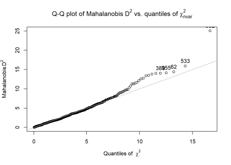
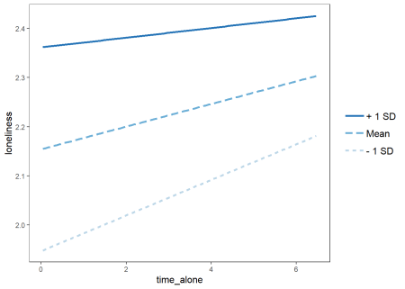
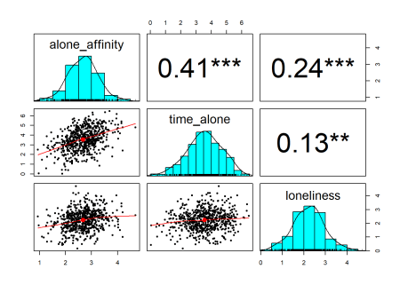

Want to share your content on R-bloggers? click here if you have a blog, or here if you don't.
Psychologists often have a standoffish attitude toward outliers. Developmental psychologists, in particular, seem uncomfortable with removing cases because of the challenges inherent in obtaining data in the first place. However, the process of identifying and (sometimes) removing outliers is not a witch hunt to cleanse datasets of “weird” cases; rather, dealing with outliers is an important step toward solid, reproducible science. As I’ll demonstrate in this simulated example, a few outliers can completely reverse the conclusions derived from statistical analyses.
library(psych)
library(tidyverse)
library(simstudy)
library(jtools)A Hypothetical Case
I’ll pretend that I have data on participants’ self-reported affinity for aloneness (i.e., how much time they like being alone), time alone (i.e., number of hours typically spent alone per week), and loneliness. We might expect that people who spend more time alone feel more loneliness. However, if you’re the kind of person who enjoys being alone, maybe being by yourself isn’t so bad. In other words, I’m interested in the moderating effect of time alone on the association between affinity for aloneness and loneliness.
Generating the Data
I’ll simulate 600 cases using the simstudy package. Because I want the variables correlated, I’ll specify a correlation matrix that makes theoretical sense.
c <- matrix(c(1, .43, .28, .43, 1, .12, .28, .12, 1), nrow = 3)
c## [,1] [,2] [,3]
## [1,] 1.00 0.43 0.28
## [2,] 0.43 1.00 0.12
## [3,] 0.28 0.12 1.00Now, I can use the correlation matrix when I generate the data. In the function genCorData, mu refers to the sample means and sigma refers to their respective standard deviations.
set.seed(206134)
data <- genCorData(600, mu = c(2.65, 3.56, 2.21), sigma = c(.56, 1.12, .70), corMatrix = c)
data <- data %>%
select(-id) %>%
rename(alone_affinity = V1, time_alone = V2, loneliness = V3)
data## alone_affinity time_alone loneliness
## 1: 2.053861 2.880370 1.750774
## 2: 2.782888 5.131749 1.646151
## 3: 2.429589 1.488717 2.333513
## 4: 2.289647 3.711900 2.780851
## 5: 3.177230 3.629568 2.694580
## ---
## 596: 2.660343 4.055748 1.811799
## 597: 1.564866 2.921037 1.842257
## 598: 2.742394 4.205703 2.598651
## 599: 1.439261 2.065413 1.547111
## 600: 3.137692 4.936879 2.580417With the data generated, I can take a look at the univariate and multivariate distributions in one fell swoop using the function pairs.panels from the psych package.
pairs.panels(data, stars = TRUE)
Everything looks normal and the correlations are pretty close to the ones that I chose.
Bring in the Outliers!
To make this example more pathological, I’ll introduce some multivariate outliers. I won’t show the code for this, but all I’ve done is manually change 20 cases.
Looking at the data again, it’s clear that the outliers have an effect. The sample correlations are still significant, but quite off the mark.
pairs.panels(data_outlier, stars = TRUE)
Model 1: All Data – Including Outliers
What if we ran a linear regression on these variables? Here, I’ll run a hierarchical linear regression with the first step predicting loneliness from affinity for aloneness and time alone. The second step adds an interaction (this is the moderation I mentioned earlier).
model1 <- lm(loneliness ~ .*time_alone, data = data_outlier)
summary(model1)##
## Call:
## lm(formula = loneliness ~ . * time_alone, data = data_outlier)
##
## Residuals:
## Min 1Q Median 3Q Max
## -1.99016 -0.48682 0.01538 0.46143 2.48231
##
## Coefficients:
## Estimate Std. Error t value Pr(>|t|)
## (Intercept) 0.66138 0.36935 1.791 0.0739 .
## alone_affinity 0.58212 0.13974 4.166 3.56e-05 ***
## time_alone 0.24982 0.10581 2.361 0.0185 *
## alone_affinity:time_alone -0.08935 0.03772 -2.369 0.0182 *
## ---
## Signif. codes: 0 '***' 0.001 '**' 0.01 '*' 0.05 '.' 0.1 ' ' 1
##
## Residual standard error: 0.718 on 596 degrees of freedom
## Multiple R-squared: 0.06105, Adjusted R-squared: 0.05632
## F-statistic: 12.92 on 3 and 596 DF, p-value: 3.478e-08Overall, affinity for aloneness and time alone both uniquely positively predict loneliness. More importantly though, the interaction is statistically significant with a p-value at .018. We can visualize this more clearly with simple slopes:
model1_int <- lm(loneliness ~ time_alone * alone_affinity, data = data_outlier)
interact_plot(model1_int, pred = "time_alone", modx = "alone_affinity") +
theme_apa()
A pristine looking interaction plot! Our simulated data shows that at higher affinity for aloneness the association between time alone and loneliness becomes more negative. This is what was expected.
If this were real data, these results are potentially publishable. What is not immediately clear though is that outliers have a severe impact on this finding. Let’s look at the simple slopes a bit differently:
interact_plot(model1_int, pred = "time_alone", modx = "alone_affinity", linearity.check = TRUE) +
theme_apa()
Oh dear… The assumption of linearity for these subsamples is clearly not met. It looks like some cases are skewing the associations among the high and low affinity groups.
Model 2 – Mahalanobis Distance
A popular way to identify and deal with multivariate outliers is to use Mahalanobis Distance (MD). MD calculates the distance of each case from the central mean. Larger values indicate that a case is farther from where most of the points cluster. The psych package contains a function that quickly calculates and plots MDs:
outlier(data_outlier)
Wow, one case is way out there, you can hardly see it! Otherwise, most of the points appear to follow in line. We might prefer a more formal test of outliers by using a cut-off score for MD. Here, I’ll recalcuate the MDs using the mahalanobis function and identify those that fall above the cut-off score for a chi-square with k degrees of freedom (3 for 3 variables, but I’ll use ncol in case I want to add or remove variables later):
md <- mahalanobis(data, center = colMeans(data_outlier), cov = cov(data_outlier))
alpha <- .001
cutoff <- (qchisq(p = 1 - alpha, df = ncol(data_outlier)))
names_outliers_MH <- which(md > cutoff)
excluded_mh <- names_outliers_MH
data_clean_mh <- data_outlier[-excluded_mh, ]
data[excluded_mh, ]## alone_affinity time_alone loneliness
## 1: 4.6 1.4 4.2Using this cut-off, only one outlier was identified. Not surprisingly, it’s the case with a huge MD relative to the others. Probing this simulated case closely, we see that this hypothetical individual really likes being alone, spent little time alone, and reported feeling very lonely.
Now we can rerun the model with this outlier omitted:
model2 <- lm(loneliness ~ .*time_alone, data = data_clean_mh)
summary(model2)##
## Call:
## lm(formula = loneliness ~ . * time_alone, data = data_clean_mh)
##
## Residuals:
## Min 1Q Median 3Q Max
## -1.98403 -0.48734 0.01331 0.45859 2.48196
##
## Coefficients:
## Estimate Std. Error t value Pr(>|t|)
## (Intercept) 0.79882 0.37897 2.108 0.035461 *
## alone_affinity 0.52131 0.14476 3.601 0.000343 ***
## time_alone 0.21964 0.10738 2.045 0.041259 *
## alone_affinity:time_alone -0.07595 0.03861 -1.967 0.049624 *
## ---
## Signif. codes: 0 '***' 0.001 '**' 0.01 '*' 0.05 '.' 0.1 ' ' 1
##
## Residual standard error: 0.7171 on 595 degrees of freedom
## Multiple R-squared: 0.05384, Adjusted R-squared: 0.04907
## F-statistic: 11.29 on 3 and 595 DF, p-value: 3.289e-07The interaction is still significant, but just barely, with a p-value of .049.
Model 3 – Minimum Covariance Determinant
Is this enough to conclude that the data supports the model? Many would probably be content to stop here, but we haven’t adequately dealt with the outlier infestation. This demonstrates the fallability of MD, which Leys et al. (2018) argue is not a robust way to determine outliers. The problem lies with the fact that MD uses the means and covariances of all the data – including the outliers – and bases the individual difference scores from these values. If we’re really interested in identifying cases that stray from the pack, it makes more sense to base the criteria for removal using a subset of the data that is the most central. This is the idea behind Minimum Covariance Determinant, which calculates the mean and covariance matrix based on the most central subset of the data.
We’ll use this to calculate new distance scores from a 75% subset of the data that is highly central. For this, we need the MASS package. The approach for calculating the distance scores is similar, and we can use the same cut-off score as before.
library(MASS)
output75 <- cov.mcd(data_outlier, quantile.used = nrow(data_outlier)*.75)
mhmcd75 <- mahalanobis(data_outlier, output75$center, output75$cov)
names_outlier_MCD75 <- which(mhmcd75 > cutoff)
excluded_mcd75 <- names_outlier_MCD75
data_clean_mcd <- data_outlier[-excluded_mcd75, ]
data_outlier[excluded_mcd75, ]This approach identified 9 outliers, as opposed to the 1 identified with the traditional MD. Let’s see whether removing these cases changes the results:
model3 <- lm(loneliness ~ .*time_alone, data = data_clean_mcd)
summary(model3)##
## Call:
## lm(formula = loneliness ~ . * time_alone, data = data_clean_mcd)
##
## Residuals:
## Min 1Q Median 3Q Max
## -1.9695 -0.4725 0.0168 0.4519 2.5129
##
## Coefficients:
## Estimate Std. Error t value Pr(>|t|)
## (Intercept) 1.18154 0.39213 3.013 0.0027 **
## alone_affinity 0.36392 0.15217 2.391 0.0171 *
## time_alone 0.08494 0.11128 0.763 0.4456
## alone_affinity:time_alone -0.02316 0.04057 -0.571 0.5683
## ---
## Signif. codes: 0 '***' 0.001 '**' 0.01 '*' 0.05 '.' 0.1 ' ' 1
##
## Residual standard error: 0.7064 on 587 degrees of freedom
## Multiple R-squared: 0.05802, Adjusted R-squared: 0.0532
## F-statistic: 12.05 on 3 and 587 DF, p-value: 1.153e-07Wow. Removing 9 data points was enough to decimate the significance of the interaction – the p-value is now .568. This is clearly demonstrated in the simple slopes:
model3_int <- lm(loneliness ~ time_alone * alone_affinity, data = data_clean_mcd)
interact_plot(model3_int, pred = "time_alone", modx = "alone_affinity") +
theme_apa()
Of course, this would be a disappointing realization for any researcher. We do see, however, that the correlations are better estimated now that these outliers are removed:
pairs.panels(data_clean_mcd, stars = TRUE)
Conclusion
This simulation was a pathological (but realistic) example of how outliers can dramatically skew results, even with reasonably large samples. The Minimum Covariance Determinant version of MD is a more robust method of identifying and removing outliers that would otherwise go unnoticed with traditional MD.
Many researchers in psychology are uncomfortable with removing outliers because they worry about losing statistical power. Others feel that removing outliers is in some way dissociating their data from reality because “in the real world, there are outliers – people are different!”. Although true, the argument shouldn’t be about whether outliers exist or not, but how much they impact the conclusions we draw from our data. In this simulation, we saw that a difference of 8 cases out of 600 was enough to turn a non-significant result significant. If our goal is to generalize our findings to a larger population, it would be foolish to do so on the basis of 8 outlying cases.
The article by Leys et al. (2018) offers suggestions about how to approach outliers. Ideally, a researcher should pre-register their plan for handling outliers. In a post-hoc situation, they advise publishing results with and without outliers. At the very least, we should be acknowledging outliers, rather than pretending the don’t exist.
As a final note, I highly recommend reading the article by Leys et al. (2018). It provides a better theoeretical grasp of MD and MCD. Some of the code used in this example (specifically, the codes for calculating MD and MCD) was used from their article. See below for the full reference.
References
Leys, C., Klein, O., Dominicy, Y., & Ley, C. (2018). Detecting multivariate outliers: Use a robust variant of Mahalanobis distance. Journal of Experimental Social Psychology, 74, 150-156.
R-bloggers.com offers daily e-mail updates about R news and tutorials about learning R and many other topics. Click here if you're looking to post or find an R/data-science job.
Want to share your content on R-bloggers? click here if you have a blog, or here if you don't.